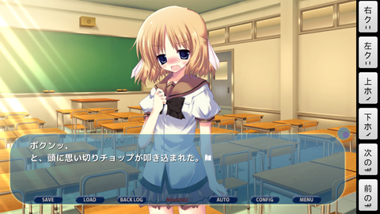

はじめに
Android 2.0 以上で動作するノベルゲームエンジン ONScripter on Android のアプリ(apk)とソース一式を配布しています。
Android 4.4 以降 5.0 未満では、アプリから外部SDカードに書き込むことが出来ません。そのため、当サイトで配布するアプリを Android 4.4 以降 5.0 未満の機種で使う場合は、ゲームデータを外部SDカードではなく内部メモリ（内部SDカード）に配置するようにしてください。
| 対象言語 | アプリ |
|---|---|
| 日本語 | ONScripter 20230825 in Google Play |
| ONScripter-20230825-debug.apk （非推奨） | |
| ONScripter-20190819-armeabi-debug.apk （Android 2.0 以降で動作可、非推奨） | |
| Android 4.4 以降 5.0 未満をお使いの方は、外部SDカードではなく内部メモリ（内部SDカード）にゲームデータを配置してください。 | |
| 英語 | ONScripter-20170816-1byte-debug.apk (ENABLE_1BYTE_CHAR and FORCE_1BYTE_CHAR are enabled) |
最大1GBのゲームデータを同梱したGoogle Play で公開可能な有償・無償のノベルゲームアプリを作成することができます。
使用にあたって私に連絡する必要はありません。また、使用者に対して私から何か要求することもありません。自由に使ってください。
使用作品例
|
|
|
|---|---|
{kind=link}
{kind=link}
|
どちらかが俺に惚れている（カジュアルゲーム１位獲得） |
|
|---|---|
{kind=link}
{kind=link}
|
|
|
|---|---|
|  | |
{kind=link}
{kind=link}
| アサルとスパイ | |
|---|---|
{kind=link}
{kind=link}
| Past Memory -過去と記憶- 体験版 | |
|---|---|
{kind=link}
{kind=link}
| かえると剣鬼 参 | |
|---|---|
{kind=link}
{kind=link}
|
小説 |
|
|---|---|
 |
|
{kind=link}
|
漫画（オンライン連載）・漫画・小説 |
|
|---|---|
{kind=link}
{kind=link}
| NOeSIS 体験版 | |
|---|---|
{kind=link}
{kind=link}
アプリの使用方法
「「ONScripter on Android」でパソコン用ノベルゲームをスマホでプレイ」の紹介記事が分かりやすいです。当サイトで配布するアプリではゲームデータを別途用意して起動時に選択しますが、自作のゲームデータを起動する専用アプリを開発することもできます。
インストール方法
Google Play で ONScripter を検索してインストールしてください。
当サイトで配布しているアプリをインストールする場合は、事前に Android 端末の「設定」→「セキュリティ」→「デバイス管理」の不明な提供元にチェックを入れ、Play ストア以外からのアプリのインストールを許可しておきます。次いで、Android 端末のウェブブラウザでこのページの一番上のアプリをクリックし、ダウンロード後にインストールしてください。
インストールに成功すると ONScripter のアイコン  がメニューに追加されます。
がメニューに追加されます。
アクセス権限
必要最低限の以下のアクセス権限を要求します。
- システムツール：端末のスリープを無効にする
- ゲーム実行中に端末がスリープしないように要求します。
- ストレージ：SDカードのコンテンツを修正/削除する
- ゲームデータやセーブデータをSDカードに書き込むために要求します。
- ネットワーク通信：完全なインターネットアクセス
- 専用アプリを開発して初回にゲームデータをダウンロードする場合に必要になります（それ以外の用途には使用しません）。当サイトで配布するアプリでは要求しません。
- ネットワーク通信：マーケットライセンスの確認
- Google Play からゲームデータをダウンロードする場合に必要になります。当サイトで配布するアプリでは要求しません。
ゲームデータの配置方法
SD カード（Android 4.4 以降 5.0 未満の場合は内部メモリ）の直下に ons という名前のディレクトリを作成し、その下にゲームごとにディレクトリ(名前は任意)を作成して、さらにその下にゲームの構成ファイルをコピーしてください。nscript.dat, arc.nsa の２つは最低必要になると思います。
/sdcard/ons/game1/nscript.dat (ゲームの構成ファイル)
/arc.nsa (ゲームの構成ファイル)
/その他のゲームの構成ファイル (基本的に全てコピー)
/sdcard/ons/game2/...
- ゲームの構成ファイル(arc.nsa など) は解像度変更などはせずに元のファイル（サブディレクトリを含む）をそのままコピーしてください。
- デフォルトでは内蔵されているフォント（M+ フォントで配布されている mplus-2m-medium.ttf）を使用しますが、default.ttf という名前のフォントファイルをゲームデータと同じ場所に置くとそちらを使用します。使用可能なフォントについてはTrueType font による文字表示を参考にしてください。
実行方法
ONScripter のアイコン  をタップして ONScripter を起動してください。
をタップして ONScripter を起動してください。
Android 5.0 以降
図１のようなゲーム選択画面が表示されるので、ゲームデータがあるディレクトリに移動した後に、右下の選択ボタン（もしくは「…」へのアクセスを許可）を押してください。

Android 5.0 未満
図２のようなゲーム選択画面が表示されるので、ゲームデータがあるディレクトリに移動（選択）してください。..は親ディレクトリへの移動を表します。Render Font Outline にチェックを入れると、フォントの輪郭を描画するようになります。チェックを外すと通常の描画になります。
ボタン
| ボタン | 機能 |
|---|---|
| MENU | メニュー表示 (次項で説明) |
| BACK | マウス右クリック (ESC キー) |
| ボリューム(+/-) | ボリューム変更 |
| HOME | 実行をバックグラウンドに移し中断 (ONScripter のアイコンをタップすると再開します) |
| 左クリック | マウス左クリック (Enter キー) |
| 右クリック | マウス右クリック (ESC キー) |
| 上ホイール | マウス上ホイール |
| 下ホイール | マウス下ホイール |
| 次のボタン | 次の選択ボタンにカーソルを移動 |
| 前のボタン | 前の選択ボタンにカーソルを移動 |
| メニュー | 以下のメニューを表示 |
メニュー
| 項目 | 機能 |
|---|---|
| オートモード | オートモード開始 (a キー) |
| スキップ | 次の選択肢まで飛ばすモードに切り替え |
| 速度切替 | 瞬間表示・通常表示の切り替え |
| 設定 | ボタンの透過度 |
| フォントの輪郭の表示・非表示の切り替え（次回起動時に反映） | |
| バージョン | バージョンなどを表示 |
| プライバシーポリシー | プライバシーポリシーのページを参照 |
| 終了 | ゲームの終了 (SDL_QUIT を発行) |
制限・注意事項
- ディスプレイの解像度に合うようにゲーム画面の解像度が自動調整されます。色深度は 32bit です。
- 電源ボタンを押すと画面がオフになり音楽の再生も中断されます。もう一度電源ボタンを押すとゲームを再開します。
- HOME ボタンを押すと処理を中断して他のアプリを実行できるようになります。この状態では、オートモードにしていても進行せず、また音楽の再生も中断されます。ONScripter のアイコンをタップするとゲームを再開します。
- 画面上でフリックするとその方向に応じて上下左右から上の表にあるソフトウェアボタンが引き出されます。ソフトウェアボタンの透過度はメニューから変更できます。
- 標準で対応している動画は MPEG-1 形式ですが、別途動画再生アプリ（VLC for Android など）をインストールしておくと、スクリプト中の動画再生命令から MPEG-4 などの他の形式の動画を再生することもできます。指定された動画を再生できる動画再生アプリが無い場合はそのまま先に進みます。動画再生アプリによっては動画再生後に ONScripter に正常に復帰しない場合があります。その場合は、動画再生後にいったん ONScripter をバックグラウンドに移動してからフォアグラウンドに戻すと復帰します。
- 起動オプションの --force-button-shortcut を指定した状態で起動します。
- 使用する音楽のサンプリング周波数は 22.05KHz か 44.1KHz のどちらかにしてください（混在可）。MP3, Ogg Vorbis, WAV をサポートしています。48 KHz などの音源は正常に再生されないので、えこでこツールなどを使って 44.1 KHz に変換してください。
- 画像は BMP, JPEG, PNG, GIF をサポートしています。
- Lua による拡張をサポートしています。（一部の機能は未実装）
アプリの開発方法
開発の流れ
- 製作 NScripter (2011/12/15)(解説)を使用して Windows PC でゲームを製作します。以下の入門講座が参考になると思います。
- NScripter研究
- NScripter講座
- NScripter使い方講座 (サンプルスクリプトあり)
- NScripter API Reference (使用可能な命令の一覧、ただし以下の命令はサポートしていません)
- 開発支援
- 外部コマンド実行
- CSVファイル操作
- テキストボタン
- 動作確認 Android 実機と PC を USB ケーブルで接続して製作したゲームデータを実機にコピーし、このページの一番上で配布しているアプリを使用して動作を確認します。問題があれば Windows PC に戻って修正します。
- アプリの作成 ゲームが完成したら、Android Studio でのアプリの作成方法を参考にインストール可能な専用アプリを作成します。
- 公開 Google Play、自身のウェブページ、電子媒体などでアプリを公開します。
Android Studio でのアプリの作成方法
統合開発環境（IDE）である Android Studio を使用してアプリを作成する方法について説明します。以下では Windows での作成方法について説明しますが、Linux や Mac でも同様の方法で作成できると思います（未確認）。
ソフトウェアの導入
- Android Studio のインストール
Android Studio からインストーラ（現時点での最新版は Electric Eel 2022.3.1 Patch 2）をダウンロードしてインストールします。
- SDK のインストール
Android Studio から SDK Manager を起動し、以下のパッケージをインストールします。末尾のバージョンは現時点でのバージョンです。
- SDK Platforms
- Android API 34
- SDK Tools
- Android SDK Build Tools 34.0.0
- NDK (Side by side) 24.0.8215888
- Android SDK Platform-Tools 34.0.4
File -> Project Structure から確認できる Gradle 関連のバージョンは以下のとおりです。
- Android Gradle Plugin Version 7.2.2
- Gradle Version 7.5.1
- SDK Platforms
- ライブラリと周辺プログラム一式 (SDK)から onscripter_android-xxxxxxxx.zip をダウンロードして c:\src\ に展開します（xxxxxxxx にはバージョン番号が入ります）。
c:\src\onscripter_android-xxxxxxxx\...
- ONScripter のページから最新の ONScripter をダウンロードして onscripter_android-xxxxxxxx\app\src\main\cpp\application\onscripter-yyyyyyyy に展開します（yyyyyyyy にはバージョン番号が入ります）。
c:\src\onscripter_android-xxxxxxxx\app\src\main\cpp\application\onscripter-yyyyyyyy\ONScripter.h c:\src\onscripter_android-xxxxxxxx\app\src\main\cpp\application\onscripter-yyyyyyyy\ONScripter.cpp c:\src\onscripter_android-xxxxxxxx\app\src\main\cpp\application\onscripter-yyyyyyyy\...
アプリの作成
必要に応じてゲームデータの配布方法・カスタマイズを参考に設定を行った上で、以下の手順に従ってアプリを作成します。
- Android Studio を起動して c:\src\onscripter_android-xxxxxxxx を開きます。
- 以下のエラーメッセージが出る場合は、
A problem occurred evaluating project ':app'. > Failed to apply plugin 'com.android.internal.application'. > Android Gradle plugin requires Java 11 to run. You are currently using Java 1.8.
File -> Settings -> Build, Execution, Deployment -> Build Tools -> Gradle を開いて、Gradle JDK を Android Studio 内蔵の jbr-11 に変更し、Try Again を選択します。 - 以下のエラーメッセージが出る場合は、
A problem occurred configuring project ':app'. > SDK location not found. Define a valid SDK location with an ANDROID_HOME environment variable or by setting the sdk.dir path in your project's local properties file at 'C:\src\onscripter_android-xxxxxxxx\local.properties'.
C:\src\onscripter_android-xxxxxxxx\local.properties を開いて以下の赤字の箇所を Windows のアカウント名に変更してください。sdk.dir=C\:\\Users\\username\\AppData\\Local\\Android\\sdk - デフォルトでは 32bit ARM プロセッサ（armeabi-v7a）と 64bit ARM プロセッサ（arm64-v8a）用のアプリを作成します。32bit Intel プロセッサ用のアプリを作成する場合は以下の赤字の箇所を x86 に、64bit Intel プロセッサ用のアプリを作成する場合は以下の赤字の箇所を x86_64 に変更してください。
ONScripter/app/build.gradle:defaultConfig { ndk { abiFilters 'armeabi-v7a', 'arm64-v8a' } }
デバッグ版
- 「Build」→「Make Project」を実行してビルドします。ビルドに成功すると、以下の場所にアプリが生成されます。
c:\src\onscripter_android-xxxxxxxx\app\build\outputs\apk\debug\app-debug.apk
リリース版（Google Play で公開する場合）
- IDE の左にある 「Build Variants」を選択し、app の Active Build Variant を release に変更します。
- 「Build」→「Make Project」を実行してビルドします。ビルドに成功すると、以下の場所にアプリが生成されます。
c:\src\onscripter_android-xxxxxxxx\app\build\outputs\apk\release\app-release-unsigned.apk
- 「Build」→「Generate Signed Bundle/APK」→「Android App Bundle」を選択してアプリに署名をします。Key がない場合は「Create new」を押して Key を作成します。途中の Build Variants の項は release を選択してください。署名に成功すると、以下の場所に署名済みのアプリが生成されます。
c:\src\onscripter_android-xxxxxxxx\app\release\app-release.aab
ライブラリと周辺プログラム一式 (SDK)
ONScripter on Android のアプリを作成するために必要な ONScripter 本体以外のプログラム一式です。Android Studio を使う場合は onscripter_android-xxxxxxxx.zip をダウンロードしてください。
| リリース日 | SDK |
|---|---|
| 最新版 | https://github.com/ogapee/onscripter_android |
| 20230824 | onscripter_android-20230824.zip compileSdkVersion と targetSdkVersion を 34 に変更しました。 |
| 20230323 | onscripter_android_studio-20230323.zip compileSdkVersion と targetSdkVersion を 33 に変更しました。 起動時にゲームを選択して実行する場合に、ディレクトリの有無をキャッシュし、ディレクトリが存在しない場合には ONScripter.java の findFile 関数を呼ばないことによってファイルの読み込みを高速化しました。 |
| 20230103 | onscripter_android_studio-20230103.zip 大文字と小文字を区別してファイル名を照合していたため、一部のファイルの読み込みに失敗するバグを修正しました。 |
| 20220816 | onscripter_android_studio-20220816.zip onscripter_android-20220816.tar.gz ゲームデータをアプリに内蔵すると、アプリをインストールした後に2回目以降は起動に失敗するバグを修正しました。 Play Asset Delivery (PAD) の install-time Asset Pack に対応して、最大1GBまでのゲームデータをアプリに内蔵できるようにしました。また、これ以外のゲームデータの配布方法は廃止しました。 |
| 20220721 | onscripter_android_studio-20220721.zip onscripter_android-20220721.tar.gz メニューのプライバシーポリシーから、Intent を使ってプライバシーポリシーのページを参照できるようにしました。 |
| 20220123 | onscripter_android_studio-20220123.zip onscripter_android-20220123.tar.gz ゲームデータの配布方法のうち「パターン２：アプリに内蔵する方法」でアプリのアセットにゲームデータを配置した場合に、インストール時にゲームデータを展開せず、実行中はアセットから直接ファイルを読み込むようにしました。 |
| 20220118 | onscripter_android_studio-20220118.zip onscripter_android-20220118.tar.gz compileSdkVersion, targetSdkVersion を 32 に変更しました。 Google Play Licensing Library を Import module を使わずに app の下に直接組み込むようにしました。 AndroidManifest.xml に android:exported="true" を設定しました。 File API や DocumentFile を使わずに ContentResolver.query と DocumentsContract を使ってファイルを読み書きするようにしました。 ゲームデータの配布方法のうち「パターン２：アプリに内蔵する方法」にのみ対応しています。 |
Port of libSDL to Android mobile platform, including several games.で Android に移植されている SDL とゲームを元に作成しています。元にしたソースは2010年5月時点のものです。pelya/commandergeniusの last-working-sdl-1.3 が元にしたソースに最も近いと思います。秋月かたねさんが公開されていた ONScripter for Android 2.1 (ARM) 20100530a test1 のソースも参考にさせていただきました。
以下のファイルが含まれています。
- アプリをコンパイルするための設定ファイル・リソース・アイコン
- Android と ONScripter の橋渡しをする JAVA のプログラム
- ONScripter.java (MainActivity.java を元に以下の機能を追加)
- 起動時のゲームデータ選択・Native Code (C++) で作成された ONScripter 本体部分の呼び出し・ソフトウェアボタン処理・メニュー処理・Intent を利用した動画再生
- Video.java (以下の機能を追加)
- 実機のボリュームボタンによる音量変更
- onSurfaceChanged() 内で OpenGL の初期化を行い、onPause(), onResume() 内で SDL_ACTIVEEVENT を発行して ONScripter 側でメインスレッドのロック(GLThread.SwapBuffers() へのアクセス)と再開時の画面再設定が行われるように変更 (あまり綺麗な方法ではありませんが、タスク切り替えに対応するため)
- DataDownload.java (以下の機能を改良・追加)
- Google Play もしくは自身で用意したサイトからのゲームデータダウンロード機能
- SDL-1.3 (SDL port for Android SDK/NDK 1.6 からコピー)
- SDL_image (SDL port for Android SDK/NDK 1.6 からコピー)
- SDL_mixer (SDL port for Android SDK/NDK 1.6 からコピー + sdl_mixer.diff)
- SDL_ttf (SDL_ttf-2.0.11 + TTF_RenderGlyph_Shaded 関数へのパッチ)
- freetype (SDL port for Android SDK/NDK 1.6 からコピー)
- jpeg (SDL port for Android SDK/NDK 1.6 からコピー)
- png (SDL port for Android SDK/NDK 1.6 からコピー)
- libogg-1.3.3 (以下のパッチを当てた後，不要なファイルを削除してからファイル配置を変更)
- libogg-1.3.3.diff (Andoroid.mk と config_types.h の追加)
- tremor (libvorbisidec_1.2.1+git20180316 に以下のパッチを当てた後，不要なファイルを削除)
- tremor-arm-thumb2.diff ([PATCH] tremor: add IT instructions for arm thumb2 tune flags)
- libvorbisidec-1.2.1+git20180316-fix.diff（Android.mk の追加，armeabi-v7a 用アセンブリ言語の分離，エンディアンの定義の追加）
- lua-5.1.5
- bzip2-1.0.5
- libmad-0.15.1b (以下のパッチを当てた後，不要なファイルを削除)
- libmad_0.15.1b-9.diff (Debian パッケージ)
- 上のパッチを当てると生成される debian/patches/ 以下のすべてのパッチ
- libmad_0.15.1b-9-fix2.diff （Android.mk の追加，__arm__, __aarch64__, __i386__, __x86_64__ の判別）
ゲームデータの配布方法
最大1GBまでのゲームデータを配布することができます。
strings.xml の修正
以下のように赤字の個所を修正してください。
ONScripter/app/src/main/res/values/strings.xml:
<bool name="use_launcher">false</bool>
ゲームの構成ファイルは ONScripter/asset_pack/src/main/assets/ 以下に配置してください。
アプリ作成時の配置例：ONScripter/asset_pack/src/main/assets/arc.nsa ONScripter/asset_pack/src/main/assets/nscript.dat ONScripter/asset_pack/src/main/assets/bgm/bgm01.ogg
ファイル名（フォルダ名を含む）の大文字と小文字は区別されます。スクリプト中のファイル名とファイルシステムのファイル名が一致するように注意してください。
これらのファイルはアプリのインストール時に同時にインストールされます。
アプリが出力するファイルは getFilesDir() で取得されるアプリ固有の内部ストレージに書き込まれます。
また、以下のように設定して、assets フォルダ内のファイルを圧縮しないでアプリを作成するようにしてください。
Android Studio の場合
ゲームデータに含まれるすべてのファイルの拡張子を、以下のファイルの noCompress の項に列挙してください。
ONScripter/app/build.gradle:
aaptOptions {
noCompress 'envdata', 'txt', 'dat', 'sar', 'nsa', 'ns2', 'sav', 'ttf', 'png', 'bmp', 'jpg', 'wav', 'ogg', 'mp3', 'mpg'
}
カスタマイズ
アプリのバージョン番号の更新
アプリを更新する場合は、必ず以下の versionCode の赤字の数値を更新前の数値から増やしてください。指定できるのは数字のみで文字列は不可です。数値は 1 から順に増やしていっても構いませんし、以下の例のように年月日にすることもできます。
ONScripter/app/src/main/AndroidManifest.xml:
android:versionCode="20230824"
パッケージ名の変更
以下の赤字の個所を変更すると、当サイトで配布しているアプリと共存できるようになります。アプリを Google Play などで第三者に公開する場合は変更してください。なお、以下の赤字の個所は同一のパッケージ名になるように注意してください。ただし、単語の区切り文字は、SDL_JAVA_PACKAGE_PATH は _ で、それ以外は . になります。
ONScripter/app/src/main/cpp/Android.mk:
SDL_JAVA_PACKAGE_PATH := jp_ogapee_onscripter
ONScripter/app/src/main/java/jp/ogapee/onscripter/*.java:
package jp.ogapee.onscripter;
ONScripter/app/build.gradle:
namespac 'jp.ogapee.onscripter'
アプリケーション名の変更
アプリケーション名が英語の場合は以下の赤字の個所を変更してください。
ONScripter/app/src/main/res/values/strings.xml:
<string name="app_name">ONScripter</string>
アプリケーション名が日本語の場合は、上記の手順で対応する英語のアプリケーション名を設定するとともに、以下のファイルの<resources>の下に以下の項目を作成して日本語のアプリケーション名を設定してください。
ONScripter/app/src/main/res/values-ja/strings.xml:
<string name="app_name">オーエヌスクリプター</string>
アイコンの変更
以下の画像ファイルを変更してください。
ONScripter/app/src/main/res/drawable-hdpi/icon.png: 72x72のアイコンONScripter/app/src/main/res/drawable-mdpi/icon.png: 48x48のアイコン
ONScripter/app/src/main/res/drawable-ldpi/icon.png: 36x36のアイコン
メニュー内容の初期設定
以下の赤字の個所を修正してください。
バージョン文字列
ONScripter/app/src/main/res/values/strings.xml:
<string name="version">ONScripter 20230824\nStudio O.G.A. Ogapee</bool>
メニューの「バージョン」が押されたときに表示する文字列を指定します。"\n"で改行されます。
ソフトウェアボタンの表示／非表示
ONScripter/app/src/main/res/values/strings.xml:
<bool name="button_visible">false</bool>
true の場合は表示状態で、false の場合は非表示状態でゲームを開始します。非表示の場合は、ゲーム画面はデバイス画面の中央に表示されます。開始後はメニューから切り替えられます。
文字の袋文字描画
ONScripter/app/src/main/res/values/strings.xml:
<bool name="render_font_outline">true</bool>
true の場合は起動オプションで --render-font-outline を指定した場合と同じになります。
縦長表示
以下のように赤字の個所を変更すると、縦長画面、つまり通常の表示から９０度回転した状態で描画するようになります。
ONScripter/app/src/main/AndroidManifest.xml:
android:screenOrientation="portrait"
リンク
- cutlass weblog
- ONScripter on Android を使用したゲーム「NOeSIS -嘘を吐いた記憶の物語-」を公開されていました。お勧めです。
Tips
- 関連するバグ報告
- フォルダに .nomedia という空のファイルを置くと、そのフォルダより下の階層にある画像や音楽ファイルはギャラリーや音楽プレイヤーの検索対象外になるようです。
- スクリーンショットを撮るには、端末を USB で PC と接続し、PC 側で Dalvic Debug Monitor (android-sdk\tools\ddms.bat) を起動して、端末側で接続タイプを HTC Sync にします。次に DDM で端末を選択し、Device -> Screen capture を実行します。
- Ctrl-F11, Ctrl-F12 でエミュレータの画面表示を縦横に切り替えられます。ONScripter on Android は横画面専用なので、エミュレータ使用時には切り替えてください。また、Alt-Enter でフルスクリーンモードの切り替えができます。
- エミュレータの作成直後は、SD card 上のファイルを実行できないようなので、以下のようにマウントし直して実行可能にします。
mount -o remount /dev/block/vold/179:0 /mnt/sdcard
- Windows で SDK Setup.exe を立ち上げてパッケージを更新する際に"Failed to fetch URL https://dl-ssl.google.com/android/repository/repository.xml" とエラーが出る場合は、c:\Users\username\.android\androidtool.cfg で以下のように設定するとうまくいくかもしれません。
sdkman.force.http=true
- Linux (Debian) で android を立ち上げてパッケージを更新する際に "Failed to fetch URL https://dl-ssl.google.com/android/repository/repository.xml" とエラーが出る場合は、以下のようにするとうまくいくかもしれません。
echo "0" > /proc/sys/net/ipv6/bindv6only
- Android の JAVA のソースの入手法。
> git clone https://android.googlesource.com/platform/frameworks/base.git > cd base > git tag -l # android 1.6 の場合 > git checkout android-1.6_r2 # android 2.1 の場合 > git checkout android-2.1_r2.1s